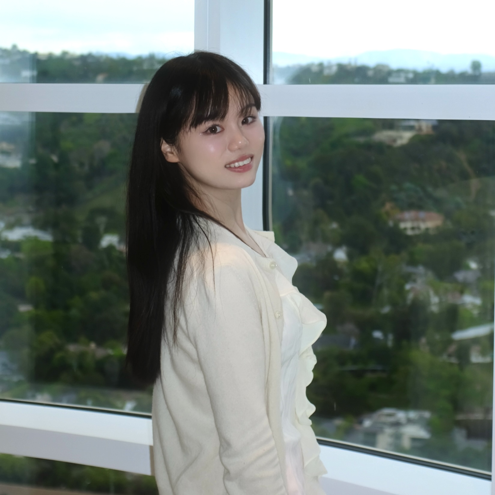

(Romy) Mi LUO
University of Texas at Austin
romyluo7 (at) gmail.com
[Google Scholar]
About Me
I am a third-year PhD student at UT Austin, advised by Prof. Kristen Grauman and Prof. Alex Dimakis. My research lies in Machine Learning and Computer Vision, specifically in the following topics:
- Video Generation
- Multimodal LLMs for Video Understanding
- 3D/4D Modeling from Videos
Publications & Manuscripts
- Viewpoint Rosetta Stone: Unlocking Unpaired Ego-Exo Videos for View-invariant Representation Learning
Mi Luo, Zihui Xue, Alex Dimakis, Kristen Grauman
In IEEE/CVF Conference on Computer Vision and Pattern Recognition, CVPR 2025. (Oral)
[PDF][Project]
- HOI-Swap: Swapping Objects in Videos with Hand-Object Interaction Awareness
Zihui Xue, Mi Luo, Changan Chen, Kristen Grauman
In Advances in Neural Information Processing Systems, NeurIPS 2024.
[PDF][Project]
- 4DIFF: 3D-Aware Diffusion Model for Third-to-First Viewpoint Translation
Feng Cheng*, Mi Luo*, Huiyu Wang, Alex Dimakis, Lorenzo Torresani, Gedas Bertasius, Kristen Grauman
In 2024 European Conference on Computer Vision, ECCV 2024.
[PDF][Project]
- Put Myself in Your Shoes: Lifting the Egocentric Perspective from Exocentric Videos
Mi Luo, Zihui Xue, Alex Dimakis, Kristen Grauman
In 2024 European Conference on Computer Vision, ECCV 2024.
[PDF][Project]
- Ego-Exo4D: Understanding Skilled Human Activity from First-and Third-Person Perspectives
Kristen Grauman, Andrew Westbury, Lorenzo Torresani, Kris Kitani, Jitendra Malik, …, Mi Luo, …, Pablo Arbelaez, Gedas Bertasius, David Crandall, Dima Damen, Jakob Engel, Giovanni Maria Farinella, Antonino Furnari, Bernard Ghanem, Judy Hoffman, C. V. Jawahar, Richard Newcombe, Hyun Soo Park, James M. Rehg, Yoichi Sato, Manolis Savva, Jianbo Shi, Mike Zheng Shou, Michael Wray
In IEEE/CVF Conference on Computer Vision and Pattern Recognition, CVPR 2024. (Oral)
[PDF][Project][Overview][Video]
- MetaFormer Baselines for Vision
Weihao Yu, Chenyang Si, Pan Zhou, Mi Luo, Yichen Zhou, Jiashi Feng, Shuicheng Yan, Xinchao Wang
IEEE Transactions on Pattern Analysis and Machine Intelligence, T-PAMI 2023.
[PDF][Project]
- MetaFormer is Actually What You Need for Vision
Weihao Yu, Mi Luo, Pan Zhou, Chenyang Si, Yichen Zhou, Xinchao Wang, Jiashi Feng, Shuicheng Yan
In IEEE/CVF Conference on Computer Vision and Pattern Recognition, CVPR 2022. (Oral)
[PDF][Project]
- Architecture Personalization in Resource-constrained Federated Learning
Mi Luo, Fei Chen, Zhenguo Li, Jiashi Feng
In NFFL Workshop, NeurIPS 2021. (Selected as outstanding paper, acceptance rate: 9%)
[PDF]
- No Fear of Heterogeneity: Classifier Calibration for Federated Learning with Non-IID Data
Mi Luo, Fei Chen, Dapeng Hu, Yifan Zhang, Jian Liang, Jiashi Feng
In Advances in Neural Information Processing Systems, NeurIPS 2021.
[PDF]
- MetaSelector: Meta-Learning for Recommendation with User-Level Adaptive Model Selection
Mi Luo, Fei Chen, Pengxiang Cheng, Zhenhua Dong, Xiuqiang He, Jiashi Feng, Zhenguo Li
In Proceedings of The Web Conference, WWW 2020.
[PDF]
Research Experiences
Professional Service
- Conference Reviewer: CVPR 2023 - 2024, ECCV 2024, ICCV 2023, ACCV 2024, NeurIPS 2023-2024, ICLR 2024-2025, ICML 2024-2025, AISTATS 2022-2025, AAAI 2025
- Journal Reviewer: International Journal of Computer Vision (IJCV), IEEE Transactions on Knowledge and Data Engineering (TKDE), Transactions on Machine Learning Research (TMLR)
- Teaching Assistant: EE2211 (Introduction to Machine Learning), CG3207 (Computer Architecture)